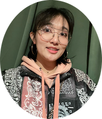

|
Wenqing Yan
Currently, I am a first second third year Ph.D. student at the Uppsala University under the supervision of Prof. Christian Rohner and Prof. Thiemo Voigt.
I received an M.S. degree in Information and Network Engineering from KTH Royal Institute of Technology in 2018, advised by Prof. Rolf Stadler, and I graduated with a B.Eng. degree in Communication Engineering from Beijing Jiaotong University, China, in 2016.
|

|
I am always fascinated by wireless research and dream of being a creative scholar. I am passionate about exploring the interdisciplinary research area among Wireless, Security and Machine Learning. My current journey of discovery revolves around the intersection field, which relies on the knowledge of communication, signal processing and computational learning theory.
I am also involved in the collaboration with Prof. Ambuj Varshney about designing an ultra-low-power communication system and sensing platform with a form factor of a sticker. It is possible to power these tiny platforms with energy harvested from the environment and without the use of any batteries.
[Curriculum Vitae] (updated April, 2022)
[Email: wenqing.yan[at]it.uu.se]
|
Academic Service
- External Reviewer: Transactions on Mobile Computing: 2022
|
|
|
RRF: A Robust Radiometric Fingerprint System that Embrace Wireless Channel Diversity
Wenqing Yan,
Prof. Christian Rohner,
Prof. Thiemo Voigt
ACM WiSec2022, San Antonio, Texas, USA.
Radiometric fingerprint schemes have been shown effective in identifying wireless devices based on imperfections in their hardware
electronics. The robustness of fingerprint systems under complex channel conditions, however, is a critical challenge that makes their application in real-world scenarios difficult. We systematically evaluate the wireless channel impact on radiometric fingerprints and
find that the channel impacts fingerprint features in a very particular way that depends on the channel properties. Based on these insights, we present RRF, a system that provides a robust identification/authentication service even under complex channel fading disturbance. Our design deploys a hybrid architecture that combines
wireless channel simulation, signal processing and machine learning.
|
|
|
JUDO: Addressing the Energy Asymmetry of Wireless Embedded Systems through Tunnel Diode based Wireless Transmitters
Wenqing Yan
Prof. Ambuj Varshney, NUS
Prof. Prabal Dutta, University of California, Berkeley
ACM MobiSys2022, Portland, Oregon, USA.
The radio transmitter is the most power-consuming component of a wireless embedded system. We present JUDO, a radio transmitter that enables power balance between the wireless transmission, sensing, and processing tasks of a wireless embedded system. In this work, we revisit the radio transmitter architecture by dramatically reducing the radiated power and hence the overall power draws. Specifically, JUDO transmitters use a tunnel diode oscillator to integrate the stages of a radio transmitter into a single energy-efficient step. In this step, baseband signals are generated and mixed with peak power draws below 100 mW. However, tunnel diode oscillators sacrifice stability for low-power, which we sidestep by using injection-locking to stabilize the tunnel diode oscillator with an external carrier signal. Based on this novel architecture, we implement a transmitter that supports frequency-shift keying as a modulation scheme. JUDO transmits to a receiver over distances exceeding 100 m at a bit rate of 100 kbps. Crucially, it does so with an emitter device providing the carrier signal, also located more than 100 m from the JUDO transmitter. In terms of critical link metrics, JUDO outperforms the radio transmitters commonly used in wireless embedded systems.
|
|
Teaching Activities
- 1DT095 Wireless Communication and Networked Embedded Systems, Spring 2022-2019, Lecturer and TA
- 1DT094 Internet of Things, Spring 2022-2019, TA
- 1DT066 Distributed Information Systems, Spring 2022-2019 TA
- 1DT072 Secure Computer Systems, Autumn 2021-2019, TA
- 1DT052 Computer Netowrk I, Autumn 2019-2018, TA
|